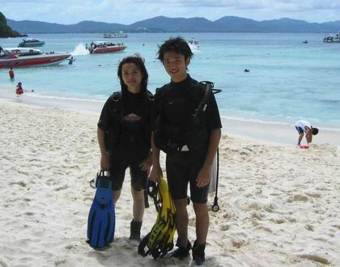
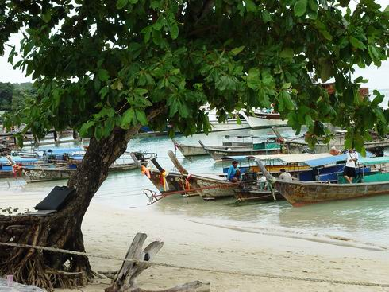
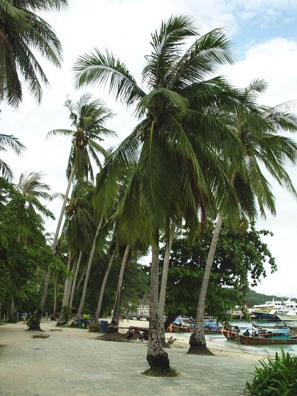
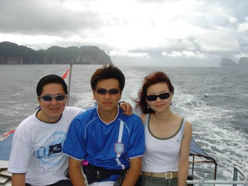
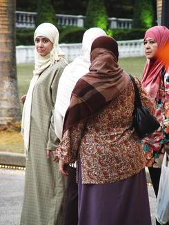
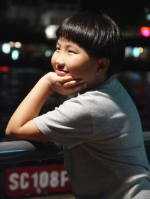

Sunken dreams @ Aug 09, 2004



早晨起来熨衣服，没找到蒸汽熨斗，只好用旅行熨斗凑合着熨，最后还是穿着皱巴巴的衣服和裙子上班了。
旅行结束后更多的是疲惫，接着是情绪低落，不想笑也不想说话，哪怕是寒暄的，我也可以变得无动于衷变得如此冷漠？喜欢边乘车兜风边听喜欢的音乐，思绪长上翅膀的感觉。
昨天早晨看见一个父亲骑车带着一个5、6岁的小女孩在炎炎烈日下，能体会到小女孩的快乐和无忧，当我小时侯在合肥郊区居住时也是这样的神情，条件不是太好，但夏季的每一天都是那么快乐。突然羡慕起来......
 中午跑去南京书城买北京女病人的新书《病忘书》，售价18元一本，天津人民出版社出版。封面上写着“2003年度获得BLOGCN.com优秀内容奖第一名。她是中国大陆最受关注的女博客”。没找到她的照片，一个漫画的小女人盘腿端坐在封二的中间位置上。一共249页，还好不是注水猪肉般字特大排版特稀疏的那种，加之一直读她的BLOG，内容自不会失望，18元值。
中午跑去南京书城买北京女病人的新书《病忘书》，售价18元一本，天津人民出版社出版。封面上写着“2003年度获得BLOGCN.com优秀内容奖第一名。她是中国大陆最受关注的女博客”。没找到她的照片，一个漫画的小女人盘腿端坐在封二的中间位置上。一共249页，还好不是注水猪肉般字特大排版特稀疏的那种，加之一直读她的BLOG，内容自不会失望，18元值。
榕树下的评论：“她是中国大陆最受关注的女博客，她是够贫又贫得到点儿上的老大。一不留神，你就在又油又毒的文字夹缝里读到特别柔软的部分。这样的文字，会让人一点招架力都没有了……就像期待已久的病愈后那个神清气爽的时刻。”有人说这种评论特烂，我倒没觉得。
昨天有个家伙说：“如果可以让我年轻12岁，现在所拥有的一切我都可以不要。”
某友仍无女友，和他谈到这个问题时，他说：恩，那种一个人走在街上的孤独和寂寞很难忍受。再看人家都是两个两个的，心理都快变态了，还好把持能力还好，否则都不知道能做出什么事情来。
我：看你的意志坚如泰山，怎么会呢？你要强奸还是猥亵 ？不然就是自虐？
他：我想拆散他门
我：总不能都想拆散吧？
他：够变态吧
我：变态，不过算轻微的变态了
他：呵呵，关键是丑男找了美女我就更难过了。好地都叫猪拱了。
我：什么叫猪拱？
他：就是被那些猪头们把好庄稼给毁了
Across the oceans Across the seas, Over forests of blackened trees.
Through valleys so still we dare not breathe, To be by your side.
Over the shifting desert plains, Across mountains all in flames.
Through howling winds and driving rains, To be by your side.
Every mile and every year for every one a little tear.
I cannot explain this, Dear, I will not even try.
Into the night as the stars collide,
Across the borders that divide forests of stone standing petrified,
To be by your side.
Every mile and every year, For every one a single tear.
I cannot explain this, Dear, I will not even try.
For I know one thing, Love comes on a wing.
For tonight I will be by your side. But tomorrow I will fly.
From the deepest ocean To the highest peak,
Through the frontiers of your sleep.
Into the valley where we dare not speak, To be by your side.
Across the endless wilderness where all the beasts bow down their heads.
Darling I will never rest till I am by your side.
Every mile and every year, Time and Distance disappear I cannot explain this.
Dear No, I will not even try.
For I know one thing, Love comes on a wing and tonight I will be by your side.
But tomorrow I will fly away, Love rises with the day and tonight I may be by your side.
But tomorrow I will fly, Tomorrow I will fly, Tomorrow I will fly.
人妖在泰国虽然不能真正为主流社会所接受，但好在并不遭受很大的歧视，学校里有人妖学生，商场里有人妖售货员。据不完全统计，到20世纪90年代，泰国人妖的数量已达2万多。
大多数人妖选择这条道路是为了挣钱，也有一些人则是天生的性别错位，但走上这条路后，大多数人妖都发现，“她们”不但要经历生理和心理的磨难，挣钱糊口也并非想像中那样简单。泰国法律规定，人妖仍然是男性，不过人妖在社会日常生活中定位为女性。人妖上公共卫生间会根据自己当天的服饰选择，如果是女性装束，那么自然去女卫生间。
前不久，位于泰国北部清迈府的一所技术学校成了当地媒体关注的对象。该校除了正常学生以外，还有15名人妖学生，这些特殊学生长期饱受在上厕所时被其他男女同学奚落之苦，迫切希望能有一所真正属于自己的厕所。近日，校方特意为“她们”修建了一所专用厕所，使“她们”终于梦想成真。
据泰国媒体报道，
清迈这所技术学校修建的人妖厕所有个美丽的名字，叫作“粉红莲花厕所”，里面设有4个蹲式马桶，没有男生用的小便池，厕所门上挂的是男女两性标志。这个厕所仅供15名人妖学生使用，禁止其他学生进入。
泰北清迈技术学校的负责人表示，根据学校规定，人妖学生在学校里必须身着男装，但却可以留女生发型。这些人妖学生习惯清晨一来便使用女生厕所，但常常惹来女学生不高兴，有些女生会对这些人妖学生恶作剧，令其难堪。但当人妖学生走进男厕所时，会比进女厕所惹来更多麻烦。男同学不但会嘲笑他们，有时还会无情的追打、戏弄他们，最终他们只能以泪洗面。这样的戏码在校园里时常上演，人妖学生们一直希望能有自己的厕所。
为了让这15名人妖学生受到更多尊重，校方决定让他们圆梦，为他们设计了一间专用厕所。学校负责人波萨旁强调，校方并不支持学生成为人妖，只是竭尽所能解决学校里一个不开心群体的问题，让他们安心地在属于自己的厕所里如厕，可以自己尽情享用，再也不会遭人取笑、被人欺负了。
泰国人妖闻名于世，作为泰国旅游的“特色”之一，它由来已久，一直保持至今。人们把人妖称之为“人造女人”或“第二种女人”,以此同天然女人区分开来，而事实上在泰国，人妖的身份证性别一栏仍注明“男”，即男儿身，女儿装。除少数人因心理因素导致性别错位而自愿成为人妖外，大多数人系生活所迫。很多眉清目秀的男孩在七、八岁时就被送进“人妖”专门学校严格训练、年龄稍大一些后就开始吃激素、打针，有的还做了变性手术，使其完完全全女性化。“她们”一般十七、八岁开始登台表演，在此之前同其他人一样正常生活、学习。人妖的命运大都很惨，寿命一般只有40来岁，完全靠吃青春饭，一生中只有几年的风光日子。一旦年龄大了，不漂亮、不吸引观众了，就被淘汰，新的“人妖”就顶替上来，真正出名赚大钱的寥寥无几。虽然人妖带动了泰国的旅游经济，泰国人对此习以为常，但并不真正为主流社会接受，就连人妖本人对自身地位也难以确定，甚至应去男厕还是女厕解手都成问题。
即使浓郁的色彩和华丽的服饰也掩盖不了那些泰国人妖令人心酸的现实......


下笔写之前，我在想......什么时候我才能对自己的生活没有太多的要求，对自己没有太多的要求，能做到这样可以令自己更加快乐，不是吗？！别总说我事多，不这样要求，我想我会死的。
鉴于普吉岛和新加坡的团体旅游体验，感慨起自助游的诸多好处来。无论行程安排的如何浅显，自助游都可以深入当地人最平实的生活节目里，即使是最基本的乘车、吃饭、住宿、问路、泡吧...亦都是对于那个地方的一种最为亲近的了解过程，能够在回忆里闪烁出可爱的光彩！
我还清楚地记得在法国尼斯餐厅里遇见的挪威老年夫妇，记得他们和蔼的笑容以及他们对80年代访问中国的幽默描述；脑海里还清楚再现2003年大年29和另外三个新认识的旅人包车从丽江前往泸沽湖大雪纷飞的惊险旅程......这些都能令我又一次感受到旅行的快乐！

Phi Phi Island
有篇文章是这样写的：8天5国欧洲游，只游了14小时
我曾参团旅行欧洲，8天游览了法国、德国、荷兰、比利时和卢森堡五个国家。朋友说我太赚了，一下子“进帐”5个。我沾沾自喜，但后来细算，惊得我差点从床上掉下来，从此再也不好意思说：“我游过欧洲”之类的话了。
行程表时间：8天，24X8=192小时。
实际旅行时间：
1、国内驻地往返机场2小时，国外机场往返驻地2小时，共约4小时。
2、候机（往返）约6小时（旅行社要求提前2小时以上到机场集合）。
3、乘机（北京巴黎往返）共约22小时。
4、旅行中乘大巴：每天平均6小时X6天=36小时。
5、进酒店休息：每天平均12小时X6天=72小时。
6、午饭及晚饭：每天平均2小时X6天=12小时左右。
7、游览时间：192小时-174小时=18小时。
真是不算不知道，一算吓一跳啊！这样再除去购物时间约4小时，实际游览时间仅仅剩下14个小时，平均每天不到3小时！按欧洲“8天5国游”团单，实际游览时间只占7%！按旅行费用12000元人民币（交旅行社的）计算，在欧洲实际游览一小时要花857元！
后来我又做了一次为期8天的德国旅行，每到一个城市都能碰到几个德国同行，我总回问他们：“你们到过中国旅行吗？”90%的德国人回答：“没有。”我接着问：“WHY NOT？”答案惊人的一致，几乎所有的回答都是：“中国太大太美，至少需要旅行一个月才能品到一点原汁原味，如果只有两周假期，根本不够。这或许就是我们总能在街头看到身背近一人高的背包“外国驴”手拿地图边走边看，而在欧洲城市街头总能看到跟在举着小旗的导游后的中国团的原因了。
旅行消费学问太大了，很重要的一点是我们要清楚自己真正从旅行中得到了什么，看过了“红磨房”的艳舞不算到过巴黎，在蒙马特泡一个晚上，在塞纳河畔逛过一天，在卢浮宫转过一圈，才算摸过巴黎的裙褶。

我们从大PP岛返回普吉岛的船上遇见一对美国年轻夫妇，他们二人旅行一个月，从中国的云南、越南一路到了泰国的普吉岛，大约花费了USD2000.00的费用，他们微笑的时候面孔非常迷人，是的，我们中国人还需要锻炼微笑的能力！当时我就想在中国什么样的工作可以每年出去旅行一个月的时间呢？教师？搞艺术的人？还是自由职业者？人家旅行是为了享受休闲或是寻求生活差异，人家可以在街头咖啡屋消磨一个下午，我们则象一群幼稚的孩子跟着“导游阿姨”还没看清楚景点，就急着照“到此一游”，脚步永远是急的，正如心永远是浮的。
旅游是精神文化消费品，如果我们的旅行是”上车睡觉、下车拍照，回来一问什么都不知道“，那么，我们不仅糟蹋了那些名胜古迹、秀美山川、说严重一点是暴殄天物。普吉岛适合休闲度假，我们最初的愿望也是这样的，说的直白些就是“玩”去的，然而行程安排俨然是观光模式，却又无观光内容，还不如去曼谷和巴提雅。普吉岛是泰国众多岛屿中面积最大的一个岛屿，周围拥有39座离岛，合计面积约578平方公里，人口18万左右。5天，在这座岛屿上所体会到的就是不停的上车下车，不断地上船下船...这不是一次旅行，更不是一个休闲的过程，连去海滩玩耍也被规定了时间，我们的思维思想及感受被剥夺在无汁无味中.....



凌晨一点多钟的飞机从新加坡飞南京，应该六点多钟到达，因为有薄雾所以耽搁一个小时左右才降落。这是一个敢死队的旅程，一个雨季的旅程，一个被剥夺思想和享受的旅程，这是我第一次渴望阳光的旅程......旅行疲惫消失后如果我还能回忆起什么有趣的细节的话，或许会写点什么......
先上几张旅途中拍摄的照片，是不是人物照比较容易拍摄出好的效果的原因，我越来越喜欢抓拍那些不经意间流露出来的表情：
1、在新加坡胡栀花公园遇见的戴着粉红小花的韩国男孩
2、头裹披肩的马来女人，摄于新加坡SENTOSA公园

3、倾听你的微笑
4、新加坡河边的中国女孩


5、Mavis & Christina

Just arrived at Singapore airport,after 3 hours we will transfer to Phuket,Thailand.Here say hello to everyone!